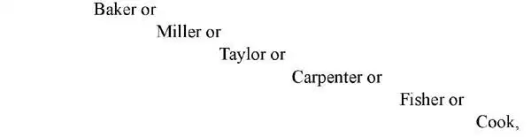
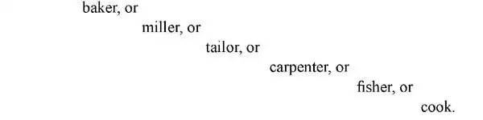
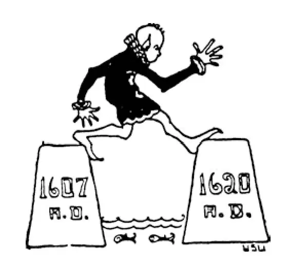

70
James the Servant
仆人詹姆斯

WHAT does your name mean? If it is

it probably means that at some time one of your ancestors was a

If your name is Stuart or Steuart or Stewart or Steward, it may mean that at some time one of your ancestors was a steward, for in olden days people knew very little about spelling, and they spelled the same name in different ways. A steward was a chief servant.
There was a family named Stuart in Scotland, and from chief servants or stewards they had become rulers of the Scots. Mary Stuart, whom Elizabeth had beheaded, was one of them.
As Queen Elizabeth never married, she had no children to rule after her. She was the last of the Tudor family. The English had to look around for a new king, and they looked to Scotland.
Now, Scotland, as I have told you, was then a separate country and not a part of Britain as now. The son of Mary Stuart was then king of Scotland. His name was James Stuart. As he was related to the Tudors, the English invited him to come and rule over them. He accepted the invitation and was called James I. So we speak of his reign and that of his children as the reign of the Stuarts.
The Stuart family reigned for about a hundred years, that is, from 1600 to 1700, all except about eleven years when England had no king at all.
Many times the English must have been very sorry that they had ever invited James to be their king, for he and the whole Stuart family lorded it over the English people. They acted as if they were lords of creation, and the English people had to fight for their rights.
A body of men called Parliament was supposed to make the laws for the English people. But James said that Parliament could do nothing that he didn't like, and if they weren't very careful, he wouldn't let them do any governing at all. James said that whatever the king did was right, that the king could do no wrong, that God gave kings the right to do as they pleased with their subjects. This was called the Divine Right of Kings. Naturally the English people would not put up with this sort of thing. Ever since the time of King John, they had insisted on their own rights. The Tudors had often done things that the people didn't like, but the Tudors were English. The Stuarts, however, were Scottish, and the people looked on them as foreigners; what they permitted in one of their own family they wouldn't stand in these strangers whom they had invited into their family. So, of course, a quarrel was bound to start. But the real fight came with the next king and not with James.
During King James's reign, the Bible was translated into English. This is the Bible that is called the King James Bible .
Nothing much happened in England during James's reign, but in some other countries a great deal did happen although the king had little to do with it. English people made settlements in India, that far-away country that Columbus had tried to reach by going west; and these settlements there grew until India at last belonged to England. England had conquered a large empire and become a wealthy and powerful nation.
Settlements also were made in America; one was made in the South and one, in the North. Raleigh's settlement at Roanoke had disappeared, as I told you; but in 1607 a boatload of English men sailed over to America looking for adventure and hoping to make their fortunes by finding gold. They landed in Virginia and named the place where they settled Jamestown after their king, James. But they found no gold, and as they were not used to work, they didn't want to do any. Their leader, Captain John Smith, took matters in hand and said that those that didn't work shouldn't eat. So then the colonists had to go to work.
Back in England people had learned to smoke, and so the colonists began to raise tobacco for the English people. The tobacco brought the colonists so much money that it proved to be a gold mine—of a different kind—after all. But the colonial gentlemen wanted someone to do the rough work for them. A few years later black people were brought over from Africa and sold to the colonists to do the rough work. This was the beginning of slavery in America, which grew and grew until, on big plantations in the South, almost all the work was done by slaves.
This system of slavery was of course very wrong and cruel, but it lasted for several hundred years. Greed lay at the root of this as well as many other evils.
A little later another company of people left England for America. These people were not looking for fortunes, however, as the Jamestown settlers had been. They were looking for a place where they might worship God as they pleased, for in England they were interfered with, and they wanted to find a place where no one would interfere with them. So this company of people left Plymouth, England in 1620 in a ship called the Mayflower , sailed across the ocean, and landed in a place they named Plymouth, in Massachusetts, and there they settled. More than half of them died the first winter from hardship and exposure in the bitter weather that they have in the North; nevertheless, none of those who were left would go back to England. This settlement was the beginning of that part of the United States called New England. You will hear more about both settlements later when you study American history. At present we must see what was going on in England, for there were great goings on following the reign of James Stuart.
【中文阅读】
你的名字是什么意思呢？如果你的名字是
就很可能意味着在某个时期你的某位祖先是一个
如果你的名字是斯图亚特或斯图尔特或斯图尔德，可能意味着某一时期你的某位祖先是个管家，因为很久以前人们对拼写知之甚少，同一个名字会有不同的拼写，但意思是一样的。管家就是仆人的头儿。
苏格兰有个家族姓斯图亚特，从曾经的仆人的头儿或管家变成了苏格兰人的统治者。被伊丽莎白斩首的玛丽•斯图亚特就是这个家族的成员。
因为伊丽莎白女王终身未婚，所以没有子女继承她的王位。她是都铎家族最后一个成员。英国人只得四处寻找一位新国王，这时他们寄希望于苏格兰。
那时，我给你讲过，苏格兰当时是一个独立的国家，不像现在是英国的一部分。玛丽•斯图亚特的儿子是当时的苏格兰国王。他的名字是詹姆斯•斯图亚特。因为他和都铎家族有亲戚关系，所以英国人邀请他来做国王。他接受了邀请，被称为詹姆斯一世。所以我们把他和他的后代的统治时期称为斯图亚特王朝。
斯图亚特家族的统治持续了大约一百年，也就是，从1600年到1700年，除了这期间有近十一年英国没有国王。
英国人一定为自己邀请詹姆斯做国王后悔了一次又一次，因为他和整个斯图亚特家族对英国人逞威作福，发号施令，就好像他们是万物的主宰，英国人不得不为争取自己的权利而斗争。
当时有一个叫做“议会”的机构，专门为英国人制定法律。但是詹姆斯宣称议会不能做任何违背他意愿的事，如果他们不注意这一点，他就不再让他们治理国家了。詹姆斯宣称国王做的一切都是正确的，国王是不可能做坏事的，上帝赋予了国王至高无上的权利，他可以对他的臣民为所欲为。这就是所谓的“君权神授说”。自然，英国人无法忍受这种事情。自从约翰国王在位时期以来，他们就坚决要求自己的权利。虽然都铎家族以前经常做些人民不满意的事情，但是都铎家族是英国人，而斯图亚特家族是苏格兰人，人们把他们看作外国人；人们可以容忍自己的家人犯错，却无法忍受被邀进入自家的外人做同样的事。所以，一场争吵当然是在所难免了。但是真正的斗争是随着下一个国王的任期开始的，并没有发生在詹姆斯在位时期。
国王詹姆斯统治时期，圣经被译成了英语。这部英语版圣经被称为“英王詹姆斯一世钦定圣经英译本” ［1］ 。
詹姆斯统治时期，英国国内没有发生什么大事，但是在其他一些国家确实发生了许多大事，不过这位国王与这些事无关。英国人在印度建立了殖民地，印度就是哥伦布试图向西航行就能到达的那个遥远的国家；这些殖民地逐渐扩大，直到最后整个印度归属于英国。英国征服了一个大帝国，成为一个富有强大的国家。
英国在北美洲也建立了殖民地；一个建在南方，一个建在北方。我在前面讲过，罗利在罗厄诺克岛建立的殖民地已经不存在了；但是在1607年一艘装满英国人的船来到美洲，他们来寻求历险，希望能找到黄金，发大财。他们在弗吉尼亚登陆，把他们定居的地方以国王的名字命名为“詹姆斯敦”。但是他们没有发现任何黄金，这 时他们还不习惯劳作，所以根本不想干活。他们的领头者约翰•斯密斯船长照管他们的生活，他告诉大家不干活休想吃饭。所以这些殖民者才不得不去干活。
而在英国，这时人们已经学会吸烟了，所以这些殖民者开始为英国人种植烟草。烟草为殖民者带来了大笔收入，他们才知道原来烟草也是金矿——虽然与金矿不是同类——但毕竟价值一样。但是那些殖民地的英国绅士们想让其他人替自己干粗活。几年以后，从非洲运来了黑人，他们被卖给殖民者做苦工。这是美洲奴隶制度的开端，随着奴隶制的发展，在南方的大种植园里，几乎所有的工作都是奴隶做的。
这种奴隶制度当然是非常邪恶而残酷的制度，但是它持续了几百年。这种制度植根于贪婪，许多其他罪恶也莫不如此。
不久以后，又有一批人离开英国去美洲。不过不像詹姆斯敦的殖民者，这些人不是为了发财。他们在寻找一个可以自由自在敬拜上帝的地方，因为在英国他们受到干涉，所以他们希望找到一个没有人可以干涉他们的地方。在1620年这批人乘坐一艘叫“五月花号”的船离开英国的普利茅斯，越过大洋，在今天马萨诸塞州的一个地方登陆，他们把这个地方命名为普利茅斯，在那里定居下来。因为恶劣的生活条件和北方严寒的天气，在第一个冬天他们中就有超过一半的人死亡；不过，剩下的人没有一个要回英国。这个殖民地是后来美国被称为新英格兰的地区的雏形。你以后学习美国历史时，会听到更多关于这两个殖民地的故事。现在我们必须看看英国国内有什么事情发生了，因为在詹姆斯•斯图亚特统治结束之后，发生了许多大事。

公元1607年 公元1620年